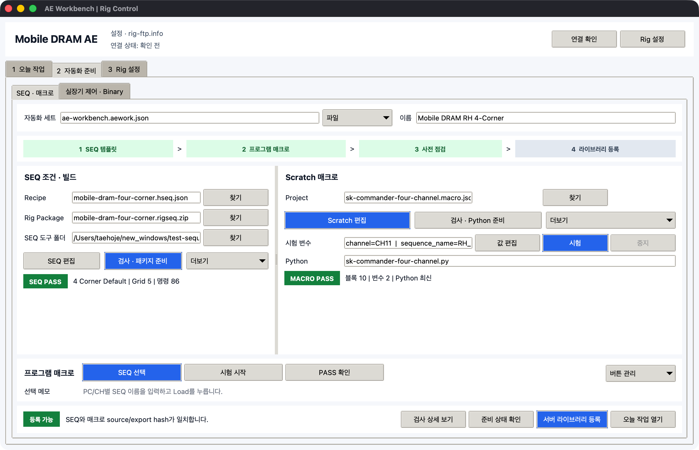
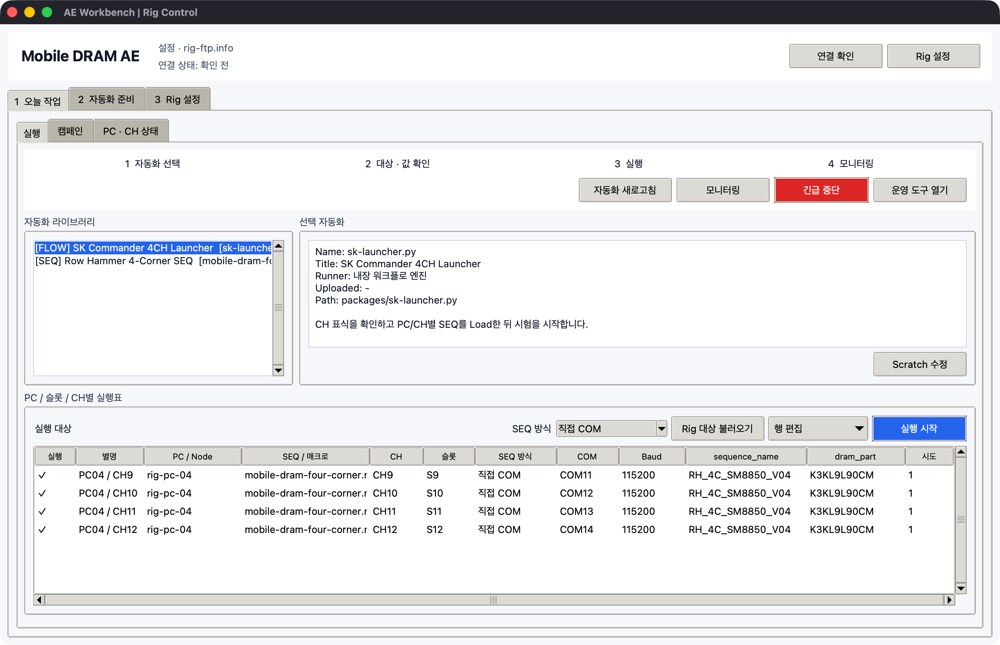

AE Workbench 통합 흐름
AEWorkbench.exe의 화면은 업무 빈도에 따라 세 탭으로 나뉩니다.
| 탭 | 사용하는 시점 |
|---|---|
1 오늘 작업 |
매일 자동화 선택, PC/CH별 값 확인, 실행과 모니터링 |
2 자동화 준비 |
프로그램 또는 시험 절차가 추가·변경됐을 때 |
3 Rig 설정 |
Master/Slave PC를 처음 설치하거나 장비 구성이 바뀔 때 |
전체 일일 절차는 Mobile DRAM AE 업무 흐름을 먼저 확인합니다.
2 자동화 준비는 SEQ · 매크로와 실장기 제어 · Binary로 나뉩니다. COM에 직접
연결해 네 장치를 동시에 보거나 MTK/QC binary를 준비할 때는
실장기 직접 제어와 Binary를 사용합니다.
자동화 세트

*.aework.json은 다음 경로를 하나의 자동화 세트로 묶습니다.
- SEQ recipe와 검증된
*.rigseq.zip - Scratch source
*.macro.json과 최신 Python FLOW - 로컬 시험 변수
- 이름과 메모가 있는 프로그램 매크로 목록
상단 파일 메뉴에서 세트를 열고 저장합니다. FTP 비밀번호는 자동화 세트가 아니라
rig-ftp.info 또는 환경 변수가 관리합니다.
SEQ 템플릿 준비
- Recipe를 선택합니다.
SEQ 편집으로 Test Sequence Generator를 엽니다.- Conditions에서 목표 Temp/VDD와 4-corner를 설정합니다.
- Run Matrix에서 Grid, CLK와 command를 구성합니다.
검사 · 패키지 준비를 누릅니다.
이 버튼은 오류 검사 후 검증된 Rig package를 생성합니다. 개별 검사만 필요할 때는
더보기 > 오류 검사만 실행을 사용합니다.
검사 범위에는 한 줄 command, ; 뒤 공백, Grid 중복, boot stage의 exit, clock,
diagnostic, log, reboot와 4-corner 누락이 포함됩니다. 자세한 내용은
SEQ Generator와 실장기 실행을 확인합니다.
프로그램 매크로 준비
- Project를 선택하거나
더보기 > 새 매크로 만들기를 누릅니다. Scratch 편집에서 연속 녹화와 블록 편집을 수행합니다.값 편집에서 이 PC로 시험할 변수값을 입력합니다.시험으로 실제 클릭·입력을 확인합니다.검사 · Python 준비를 누릅니다.

Scratch 작업실의 기본 보기=작게는 일반 블록 46px, 블록 사이 2px입니다. 블록의
위아래 결합 홈과 컨테이너 외곽이 이어져 있으면 같은 실행 스택입니다. 드래그 중에는
하늘색 결합 영역을 확인하고 놓습니다.
Scratch source가 export 이후 바뀌면 SHA-256이 달라져 서버 등록 버튼이 비활성화됩니다.
수정 후 검사 · Python 준비를 다시 실행해야 합니다.
프로그램 매크로 목록
프로그램 매크로는 자주 쓰는 source를 파일명 대신 업무명으로 선택하는 목록입니다.
- 현재 Scratch project를 준비합니다.
버튼 관리 > 현재 매크로 등록을 누릅니다.SK Commander 시험 시작같은 이름과 업무 메모를 입력합니다.
버튼 관리에는 이름·메모 수정, 좌우 이동과 삭제가 있습니다. 목록 버튼을 눌러도
즉시 실행되지 않으며 편집·시험할 source만 선택됩니다.
준비 상태와 서버 등록
| 표시 | 의미 |
|---|---|
SEQ PASS |
package가 유효하고 현재 recipe와 source hash가 같음 |
MACRO PASS |
Scratch 구조가 유효하고 Python FLOW가 최신임 |
등록 가능 |
두 자산을 서버 라이브러리에 등록할 수 있음 |
시험 PASS |
현재 PC에서 로컬 매크로 시험 완료 |
확인 필요 |
파일 누락, 검사 오류 또는 stale package/FLOW |
검사 상세 보기는 기본 화면에서 숨긴 SEQ·매크로 검사 로그를 펼칩니다. 평소에는 상태
배지와 한 줄 요약만 확인합니다.
서버 라이브러리 등록은 FLOW와 Rig SEQ를 업로드하지만 원격 실행은 시작하지 않습니다.
등록이 끝나면 오늘 작업으로 이동하고 PC/CH 실행표를 확인해야 합니다.
오늘 작업

자동화 라이브러리에서 항목을 선택하고 직접 COM 또는 SK Commander 방식을 고른 뒤
Rig 대상 불러오기로 실행표를 만듭니다. 셀을 더블클릭하면 PC/CH별 변수, SEQ 방식,
COM/baud, launcher와 attempt를 바꿀 수 있습니다.
실행 시작 전까지 원격 job은 생성되지 않습니다.
운영 도구 열기에는 raw 파일 등록과 단일 PC 고급 실행만 있습니다. 일반적인 일괄
시험에서는 닫아 둡니다.
안전 경계
- 정적 검사는 실제 SK Commander prompt timing을 보장하지 않습니다.
- 직접 COM 엔진도 새 SoC/SEQ의 현장 command 의미와 timing을 자동 보증하지 않습니다.
- 로컬
시험은 현재 Windows desktop에서 실제 클릭과 입력을 수행합니다. - UI 자동화와 화면 캡처에는 로그인된 interactive desktop이 필요합니다.
- 관리자 권한 대상은 Workbench와 Agent도 같은 권한으로 실행해야 합니다.
- Mac에서는 UI 구조와 데이터 흐름만 검증하며 Windows UIA selector는 현장 확인이 필요합니다.
실제 위젯 감사
문서 이미지는 목업이 아니라 실행 중인 Tk/Qt 창 ID를 직접 캡처합니다.
| 검증 | 결과 |
|---|---|
| 오늘 작업·자동화 준비·Rig 설정 내비게이션 | PASS |
| 저빈도 운영 도구와 검사 상세 열기/닫기 | PASS |
| Scratch 작게/보통 레이아웃과 팔레트 drag/drop | PASS |
| 반복 블록 내부 삽입, 안팎 이동, 복제·삭제·undo/redo | PASS |
| 로컬 wait 매크로 실행 후 중지 | PASS |
| 4채널 콘솔·Binary·장치 도구의 1080×720 경계 | PASS |
| 모든 기본 컨트롤의 1080×720 경계 | PASS |
| 기본 4-corner recipe Validate | 5 blocks, 86 commands PASS |
화면 재생성:
.venv/bin/python scripts/capture_manual_screenshots.py